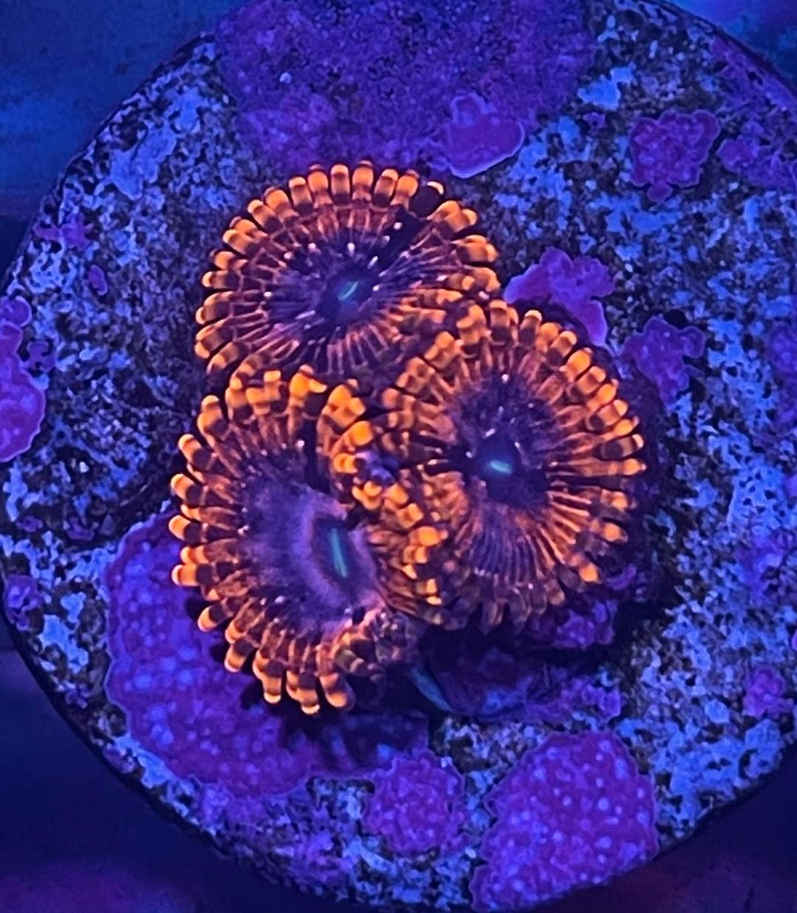

Coral Care
- 
-

-

-

To help you provide the best home and care for your corals, we've prepared the following care guide. It provides basic information on lighting, flow, etc. required for each of the corals we sell. You'll also find additional general info and reefkeeping advice from Michael, our resident husbandry manager.
Please note that although we've been doing this for a long time, much of this information is based on our own experience and is not "written in stone". These are just general guidelines to point you in the right direction. If you have any questions, please do not hesitate to contact us.
Lighting
. L - Low light (Normal output lights stacked over the entire tank)
. M - Medium light (Power compacts, VHO, few H.O. T5s)
. H - High light (Metal halides, A lot of H.O. T5s, or equivalent)
Flow
. S - Slow current
. N - Normal flow (should never be linear and directly flowing across the coral)
. E - Extreme flow (should never be linear and directly flowing across the coral)
Difficulty
. B - Beginner (easy to keep, generally very hardy corals)
. I - Intermediate (requires very clean water and/or feeding)
. A - Advanced (hard to keep and/or other special requirements)
Food Size
P - Phytoplankton/Dissolved nutrients
T - Tiny (Rotifers or smaller)
V - Very small (about the size of mysid shrimp)